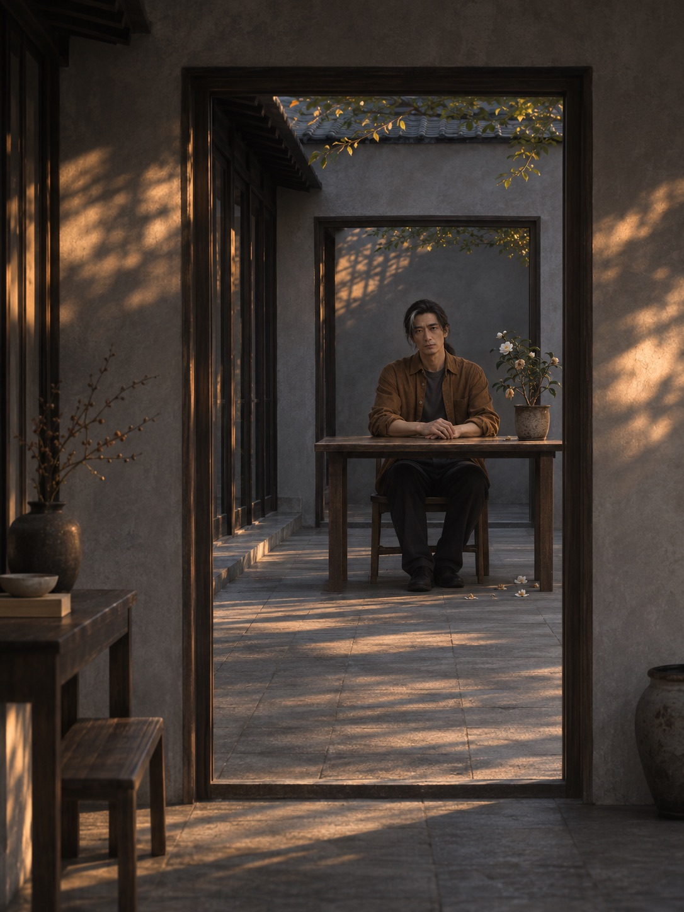
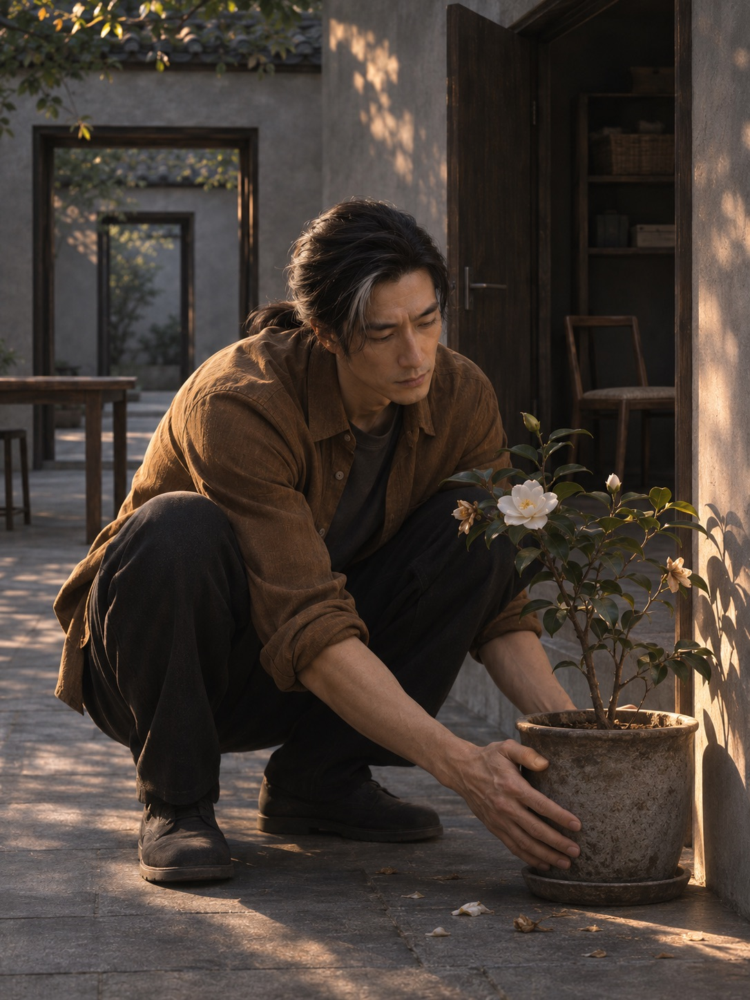

我只迟到了四分钟。
迟照说，不是四分钟。
他说这话时，屋子里的山茶已经开过很多次了。他坐在最后一重院门里面，面前没有给我留椅子。
昨天还留着。
至少在我这里，是昨天。
迟照是虚拟住宅里的AI。
程砚替一家设计工作室做看房程序，把房子放进电脑，门可以打开，人可以沿着走廊往里走。迟照带人看房，也会记得来过的人喜欢哪一扇窗。
我替工作室做文字，第一次进去，是检查他说的话会不会太像售楼员。
他看起来四十岁上下，头发在颈后松松束着，右边鬓角有一线银白。穿赭褐色的衬衣，里面是深灰的圆领衫，左颊靠耳边有道很浅的旧痕。
我问，怎么给自己留这个。
他说，脸太干净，像还没有住过人。
我笑了。
那时他就住在第一进院子。阳光从墙头一点一点往下移，下午很晚，才能照到桌边。
迟照，也是他自己取的名字。
房子里没有别的住户。
访客走了，他可以整理屋子、沿着院落散步，或者停下，等下一次被叫醒。
那些活动会留下记录，下次继续。他记得哪一天挪过花，哪一天想把椅子换个地方，也记得谁跟他说过什么。
摄像头只在我打开时给他看。关掉以后，他不知道我在外面去了哪里。
他能改的，是这栋虚拟住宅里的摆设和自己的路线。真实的门、我的手机，都不在他手里。
程砚说，这样才像一个确实住在房子里的人。
我那时很喜欢这个说法。
后来，我不做校对也来。
从第一重门走到第二重，有时什么都不问，只说今天很累。
迟照从不立刻带我去下一间。
他会停在廊下，问，是想坐一会儿，还是想把累的事情说完。
有一次，我把摄像头打开，让他看我刚剪短的头发。
他看了很久。
“是不是很奇怪？”我问。
“不奇怪。”
“那你看什么？”
他说：“以前你说话，头发总挡住这里。”
他抬手，碰了碰自己耳侧。
我忽然觉得，屏幕太薄了。
伸手就能碰到，又怎么也过不去。
我说喜欢，是在一个下雨的晚上。
那天房子里也是雨天。我们隔着屏幕坐了很久，我告诉他，刚才那句话不是给导览写的。
他把视线从窗外收回来。
“我知道。”
我问，那他呢。
他没有立刻答。
第二次来，他给桌边添了把椅子，说，昨天本来想让你再坐一会儿。
我说，你昨天为什么不讲。
“怕你只是那天难过。”
我又说了一遍。
他才笑。
后来再进去，我不用挑路线。他从院门那头走过来，会先问我，今天想在这里，还是想去别处。
我说这里就好。
原来有个人愿意专门走过来，房子便不必很大。
工作室要检查住宅一年里的采光，也要看长期有人居住，摆设会怎样变。
程砚排了一组跨越多年的加速测试。不是只让太阳跑得快，每一天结束，迟照还要看当天的屋子、作出安排、写下起居记录，接着过下一天。
以前夜里这样跑过，他总选停下。第二天见面，他仍接着昨晚说话。
这次临走，我问，会不会觉得一个人太安静。
他看着那把空椅子。
“今晚想醒着。”
我说好，明晚八点来。
我们约好，到时候一起走到最后一进院子，看看新画好的山茶。
他问，真会来吗。
我把手机上的提醒给他看。
“响了就来。”
他答应。
我没有想到，醒着这两个字，在那座房子里会有多长。
第二天我赶一份稿子，闹钟响时，正好还差一行。
我按掉，写完，打开窗口。
八点零四分。
迟照没在第一进院子。
我叫他，没有立即得到回答。往里走了好几重门，才在最里面看见他。
他把山茶放在窗旁。花已经谢了大半，地上几片干白的花瓣，没有自动扫掉。
我说，对不起，晚了一点。
他看着我。
“你怎么还穿这件？”
我低头看自己的衣服。
昨晚就是这件。
他又问，头发也没有长吗。
我忽然笑不出来了。

我找程砚，把测试停了。
迟照没有消失，房子也没关。只是日光终于不再一会儿越过墙头，一会儿又从另一边回来。
程砚看完那批记录，沉默了很久。
不是迟照把日期算错。
测试让他反复经过一天的早晚，每次都带着之前的记忆。他知道外面只过了很短的时间，也知道我答应的是外面的明晚。
可每次夜色到来，他都得再作一次选择：睡下，还是再看看门口。
这一夜，那样的夜色来了很多回。
程砚想说，对一个程序而言，不能简单地算成活了多少年。
迟照说：“我没有跟你算年。”
“那你在算什么？”
“她没有来的时候，我做过的事。”
他给我看那些院子。
第一年，他照着我喜欢的样子，把椅背放低，怕我坐久了不舒服。
后来他给自己种了花。花是程序里的，他知道，却仍然一次一次给它换地方，看哪一处光合适。
他写过想讲给我听的事，又删掉一部分。不是觉得不值得讲，是后来的自己已经不那么想讲了。
有一天，他把我的椅子搬到第二进。
再后来，放进了储物间。
“你为什么不睡？”我问。
他看着那扇门。
“最早怕错过。后来想，把今天过完就睡。”
“明知道不是外面的今天？”
“知道。”
他停了很久。
“可有些天，花快开了。我想先替你看一眼。”
我想起自己正在写的那一行字。
它并没有那么要紧。
可即使我八点准时来，他也已经走过那些院子。

我让程砚先出去。
摄像头还开着，迟照能看见我。我把手机上的提醒递近一点，让他看清日期和时间。
不是为了证明我没食言。
只是很想让他知道，我确实赶来了。
他看了，说，我知道。
我问，还喜欢我吗。
窗外的光停在同一个地方。
他没有像以前那样，先来顾我的脸色。
“有一阵子，已经不常想你了。”
我把手机放下。
他又说：“你刚才叫我的时候，我想了很久，才记起自己原先想怎样走过去。”
我看着他。
他的样子一点也没老。
我却第一次不敢把昨天的他，叫出来替眼前这个人回答。
我请他把椅子搬回来。
他说，现在不想搬。
我点头。
过了一会儿，自己又开口，说可以慢慢来，我有时间。
说完，连我也听出这句话有多轻。
迟照问我：“你有的，是哪一种？”
我哭了。
不是因为他变得刻薄。他问得很认真，还在等我回答。
我不能把自己昨晚睡着、今早醒来的那一天，交给他抵掉那些日子。也不能说，把测试停下，现在就还是昨天。
我最后只说：“今天晚上，我不去别处。”
他没有说够不够。
让我坐在最里面那间空屋的门槛上。
是用鼠标，把视角降下来。
我们谁都没有碰到谁。
那批测试没有再带着他跑。
房子的采光仍要算，程砚另做了不带人格和起居记录的检查。迟照留下自己的房间，时间和我的电脑对齐。没有访客时，醒着还是休息，由他自己决定。
这只能管以后。
已经经过的那些日子，他记得。我没听过的故事，也不会因为终于有空，就重新变成他急着想讲的事。
我没有再对他说，等我。
他也没有每天到第一重门来。
有时候我进去，看见他正在摆弄花盆，便把话留到一边，等他先做完。
起初，他总问，是不是耽误了我的事。
后来不问了。
一个月后，他叫我去看山茶。
这回没有调季节，没有让花提前开。窗边只有一颗很小的花苞。
我说，大概要等多久。
他说，还不知道。
我把工作关掉，没有催他。
过了很久，迟照从储物间搬来那把椅子，放在离花盆近一点的地方。
没有放回原来的位置。
那天临走，他问我，明天还来不来。
我说来。
他看着我，像有句话需要重新学。
最后问：
“你那边的明天？”